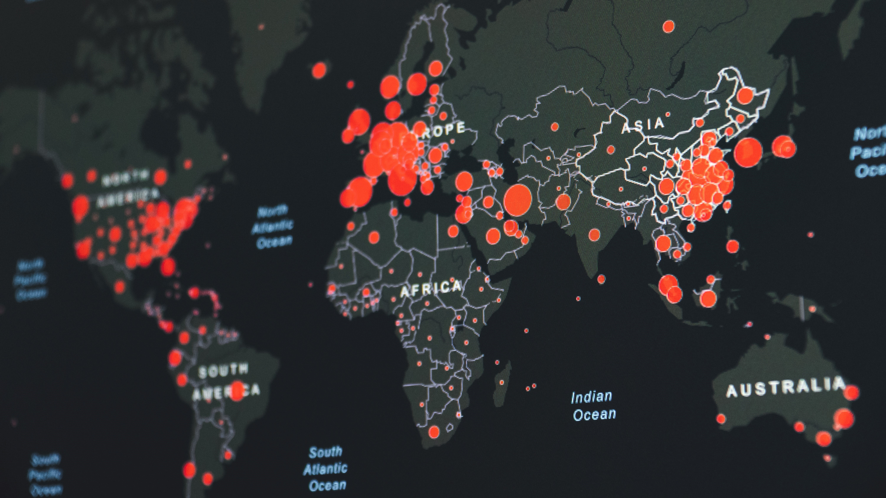

COVID DATA CLEANING IN SQL
In this project, I took the covid raw data and transformed it by detecting and correcting inaccurate/irrelevant records from the database in SQL Server to make it more organized and usable for analysis.

HOTEL DATA CLEANING
IN SQL

In this project, I transformed a hotel raw data by detecting and correcting inaccurate/irrelevant records from the database in SQL Server to make it more organized and usable for analysis..
HOTEL POWERBI VISUALIZATION
In this project, I made a graphical representation of the hotel data that was previously cleaned, highlighting patterns and trends in the data to help stakeholders gain quick insights.
POWERBI VISUALIZATION
(PROJECTS)
.jpg)
Here, I worked on multiple projects where I did data manipulation, analysis, and visualization in PowerBi, highlighting patterns and trends in the data to help stakeholders gain quick insights.
COVID TABLEAU
VISUALIZATION

In this project, I made a graphical representation of the covid data that was previously cleaned, highlighting patterns and trends in the data to help stakeholders gain quick insights.
BELLABEAT DATA ANALYSIS
USING PYTHON
In this project, python was used to do a complete data analysis with Bellabeat's fitbit raw data. The complete analysis includes data exploration, cleaning, manipulation, analysis, visualization and report.
MOVIE DATA ANALYSIS
USING PYTHON

In this project, I used python to do a complete data analysis with the world movie raw data. The complete analysis includes data exploration, cleaning, manipulation, analysis, visualization and report.